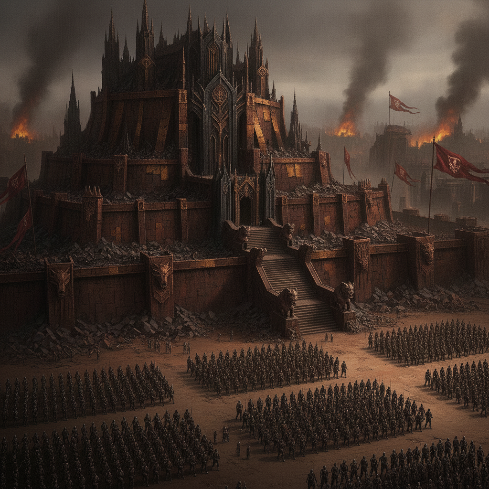
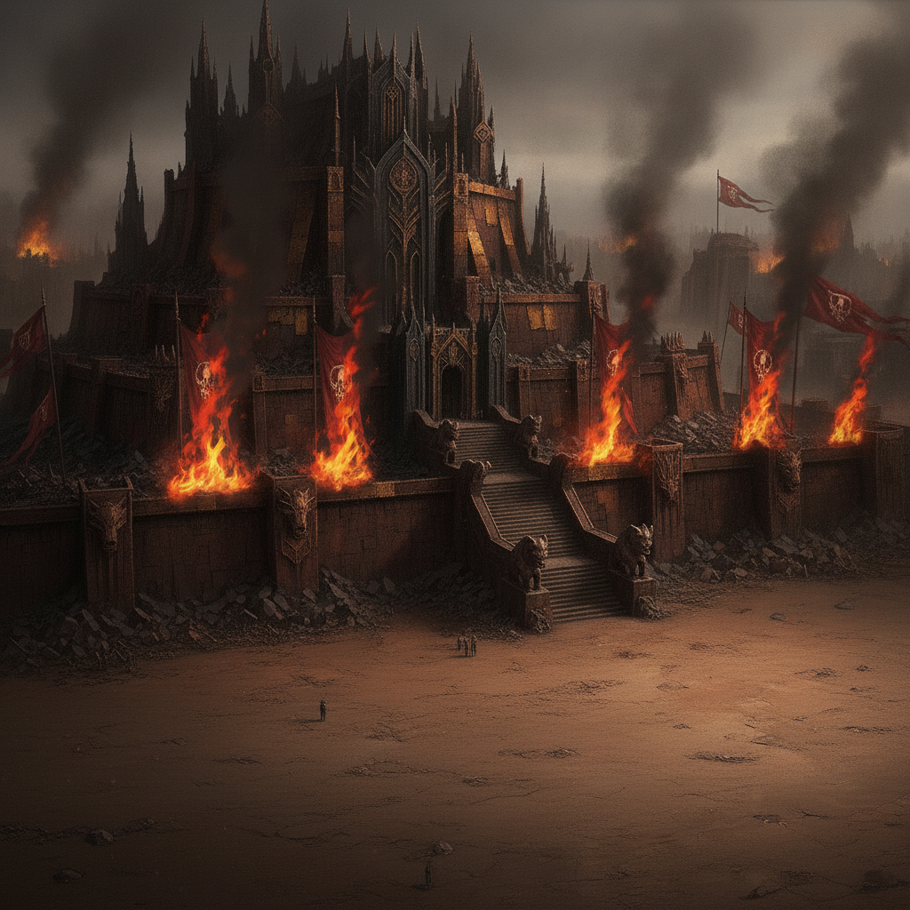

Alliances are instruments. Nations are pieces on a board. I expose corruption not to reform, but to destabilize. To seize.
Where the romance paths saw desperate pairs murder monarchs, I kill them as conquest. I absorb their forces into my growing host. Coalition-building becomes empire-building.

We stand in a throne-hall of black stone and looted brass, raised over the ashes of a city I bloodily conquered. Banners of the old ruler burn. New ones—mine—go up in their place.
I crown myself and my four consorts over the ashes. They stand by my side: Ember, my fire; Isolde, my precision; Seraphine, my word; Wren, my shadow. My love for them is absolute. The world will learn to fear it.